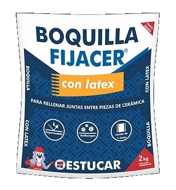

Fragua para cerámicos

Material que se aplica entre las piezas cerámicas para completar el acabado, reducir la acumulación de suciedad y proteger las juntas. Existen opciones para distintos anchos y condiciones de humedad.